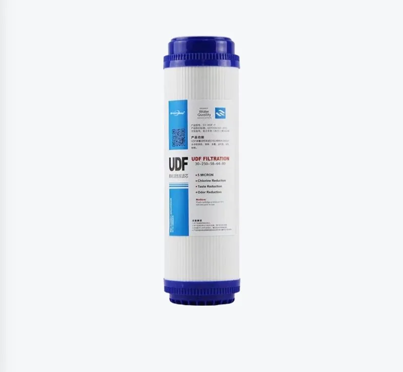

Bộ lọc GAC nắp phẳng
Lõi lọc than hoạt tính gáo dừa dạng hạt UDF đầu phẳng – Nắp đầu màu xanh dương — Cấu hình nhìn thấy được: Nắp đầu màu xanh dương.
Gửi yêu cầu
Bộ lọc than khối CTO nắp phẳng được định vị là bộ lọc than khối CTO cho các chương trình cung ứng máy lọc nước, máy cấp nước và bộ lọc sơ bộ. Khi lựa chọn, nên xác nhận vật liệu than hoạt tính gáo dừa, cấp độ lọc tính bằng micron, kích thước lõi lọc, độ sụt áp, khả năng lắp vừa vỏ lọc và cách đóng gói bộ lõi thay thế. Các thông số chính bao gồm: Nắp: Nắp phẳng.
Bộ lọc than khối CTO nắp phẳng thường được so sánh theo cấp chất lượng vật liệu than, mục tiêu hấp phụ, cấp độ lọc tính bằng micron, chiều dài lõi lọc, kiểu nắp và khả năng lắp vừa vỏ lọc. Đối với các chương trình cung ứng lõi lọc nước mang nhãn hiệu riêng, các chi tiết hữu ích trong báo giá gồm thiết kế bao bì bọc, cơ cấu các lõi trong bộ thay thế, ngôn ngữ trên thùng carton và cách đóng gói trên pallet.
Đối với bộ lọc than khối CTO nắp phẳng, nội dung về lõi lọc than nên tập trung vào vật liệu lọc, độ nén, thời gian tiếp xúc, độ sụt áp, các vỏ lọc tương thích và vị trí của lõi lọc trong trình tự lọc. Điều này giúp người mua có tiêu chí lựa chọn rõ ràng hơn so với việc lặp lại cách diễn đạt về bán buôn hoặc nhà máy.
| Loại | CTO |
|---|---|
| Nắp | Nắp phẳng |
Lõi lọc than hoạt tính gáo dừa dạng hạt UDF đầu phẳng – Nắp đầu màu xanh dương — Cấu hình nhìn thấy được: Nắp đầu màu xanh dương.
Gửi yêu cầu
Lõi lọc cặn PP đầu phẳng sử dụng lõi lọc đầu phẳng. Vật liệu lọc cặn là polypropylene (PP). Sản phẩm dành cho lọc thô sơ bộ và thay thế lõi tại cấp lọc cặn trong thiết bị lọc nước gia đình.
Gửi yêu cầuGửi số lượng, thị trường đích, ghi chú về cấu hình và yêu cầu đóng gói cho bộ lọc than khối CTO nắp phẳng. Yuchen Water sẽ xác nhận các tùy chọn phù hợp, phụ kiện và chi tiết xuất khẩu trước khi đưa ra mức giá.